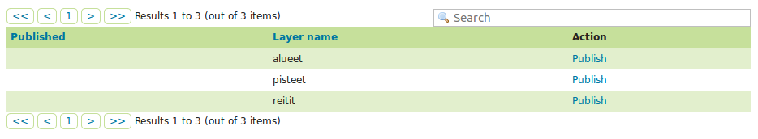
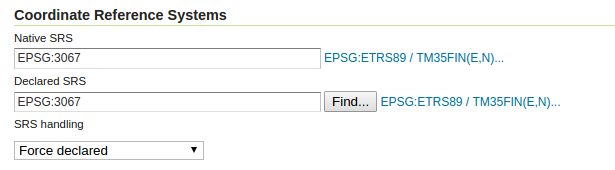
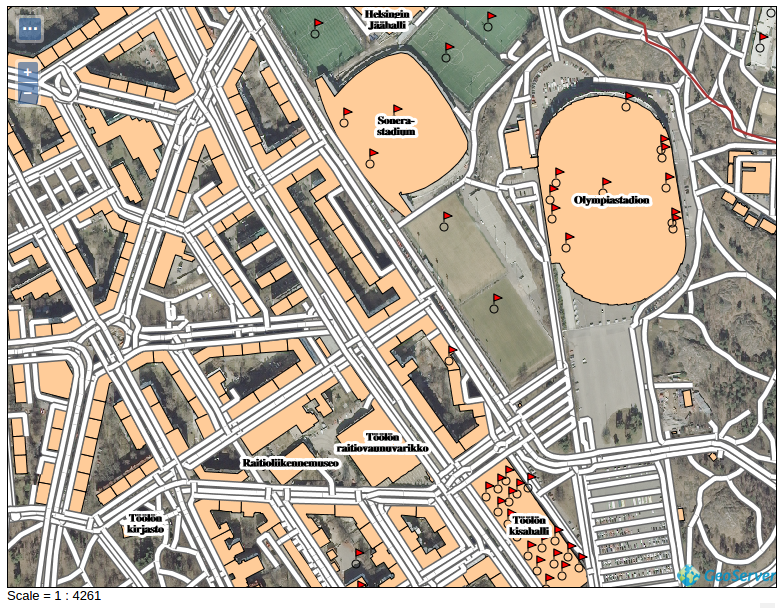
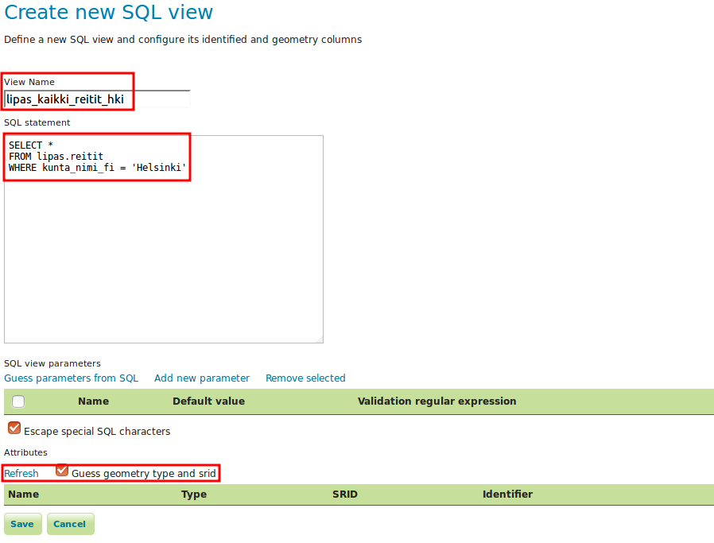

Harjoitus 1.7: Paikkatietokannat
Harjoituksen sisältö
Harjoituksessa lisätään aineistoja GeoServeriin tietokantalähteestä.
Harjoituksen tavoite
Harjoituksen jälkeen opiskelija osaa yhdistää paikkatietokannan tietoja GeoServeriin ja julkaista sillä niiden aineistoja.
Arvioitu kesto
30 minuuttia.
Valmistautuminen
Käynnistä koneessa web-selain ja kirjaudu osoitteeseen:
Palvelinkoneeseen on asennettu PostgreSQL-tietokanta ja sen PostGIS-laajennos. Tietokantaan on ladattu valmiiksi erilaisia vektoriaineistoja.
Yhteyden muodostaminen paikkatietokantaan
GeoServer tukee useimpia paikkatietokantoja, kuten PostGIS, ArcSDE, Oracle ja Microsoft SQL Server.
PostGIS-paikkatietokannat ovat hyödynnettävissä automaattisesti GeoServerin oletusasennuksien kautta. Muiden tietokantojen tuki asennetaan lisäosien kautta.
Koulutusympäristöön on asennettu valmiiksi PostGIS-tietokanta, josta löytyy valmiina erilaisia vektoriaineistoja. Aineistot ovat Helsinki Region Infoshare, Jyväskylän yliopiston avoimen datan palveluista ja OpenStreetMap -kartta-aineistosta (geofabrik.de-palvelusta).
Kuten muiden aineistojen kanssa, jotta aineistoja voidaan käyttää GeoServerissa, niihin on viitattava luomalla sopiva store.
Luo uusi store (Data → Stores → Add new Store).
Valitse formaatiksi PostGIS - PostGIS Database:

Valitse Workspaceksi tuttu helsinki-workspace ja nimeä se hki_lipas (Data Source Name).
Täytä sitten PostGIS-tietokannan Connection Parameters -yhteysasetukset seuraavasti:
Dbtype |
postgis |
Host |
localhost |
Port |
5432 |
Database |
gs_training |
Schema |
lipas |
User |
postgres |
Passwd |
gispo |
Jätä loput asetukset oletuksiin ja paina lopulta Save.

Samalla tavalla kuin aiemmin, uuden tason luomisen näkymä tulee esiin automaattisesti storen luomisen jälkeen. Näkymässä on listattu kaikki tasot, jotka löytyvät kyseisessä tietokannassa.
Aineistoon on nyt tehty viittaukset hki_lipas-storen kautta ja voit nähdä, mitä aineistoja se sisältää: 
PostGIS-tason lisääminen
Voit heti julkaista jonkin tason storen luomisen jälkeen painamalla Publish. Julkaise nyt pisteet-taso. Lipas on Jyväskylän yliopiston hallinnoima valtakunnallinen liikunnan paikkatietojärjestelmä.
Psst! Kun myöhemmin haluat julkaista muita tasoja hki_HRI-storesta se onnistuu päävalikosta Data → Layers → Add a new layers ja valitsemalla haluamasi store.
Tason editoinnin näkymässä, tason nimi ja otsikko on automaattisesti täytettynä. Pidä oletusnimet ja lisää halutessasi lisätietoja Abstract-kentälle.
Tarkista, että Enabled ja Advertised ovat rastittuina.
Kuten olet varmasti jo huomannut, uuden tason asetukset ovat samanlaiset, oli kyseessä sitten shapefile-formaatti tai PostGIS-tietokanta.
Katso vielä Coordinate Reference Systems -osiosta, että GeoServer on tunnistanut koordinaattijärjestelmäksi EPSG:3067. PostGIS ja GeoServer käyttävät EPSG-koodeja määrittääkseen koordinaattijärjestelmän, joten useimmiten koordinaattijärjestelmä tulee oikein määritellyksi automaattisesti.

Ennen kuin tallennetaan tason julkaisuasetukset, määritä tason Bounding Boxes samalla tavalla kuin aikaisemmin lisäämiesi aineistojen kanssa.

Paina lopulta Save. Voit esikatsella uutta tasoa Layer Preview:n kautta.

Monikulmio- ja viiva-tason lisääminen PostGIS-tietokannasta
Lisää samalla tavalla vielä kaksi uutta tasoa PostGIS-tietokannasta:
lipas_kaikki_alueet
lipas_kaikki_reitit
Muista, että saat tasoja lisättyä Data → Layers → Add new layer -toiminnon kautta ja valitsemalla helsinki:hki_lipas lähteeksi. Esikatsele sen jälkeen näitä tasoja tarkistaen niiden toimivuus.
Mitkä vaiheet ovat pakollisia tason julkaisemiseksi? Mitkä ovat tasojen koordinaattijärjestelmät ja niiden laajuudet?
Tasojen oletustyylien asettaminen
Vaihda lopuksi oletustyylit kyseisille tasoille käyttäen GeoServerin valmiita kuvaustekniikoita (default styles). Voit vaihtaa tason tyylin päävalikosta Data → Layers ja avaamalla haluamasi tason. Tyylit määritellään Publish välilehdestä. Käytä seuraavia tyylejä:
| Taso | Tyyli |
|---|---|
| lipas_kaikki_pisteet | burg |
| lipas_kaikki_alueet | giant_polygon |
| lipas_kaikki_reitit | simple_roads |
Voit vielä lopuksi tehdä aineistoista ryhmätason. Kuvassa on yhdistetty Helsingin taustakartta-ryhmätaso ja lipas-aineistot yhteen karttapalvelutasoon: 
SQL-näkymät
GeoServerin avulla voidaan hyödyntää myös SQL-kyselyitä paikkatietoaineistojen jakamisessa.
Lisätään toistamiseen lipas_kaikki_reitit-aineisto uutena tasona palvelimelle. Tavoite on luoda taso, jossa ainoastaan Helsingissä olevat aineistot näytetään.
Annan nimeksi lipas_kaikki_reitit_helsinki.
Psst! SQL-näkymä voitaisiin luoda myös suoraan tietokantaan ja käyttää tuota näkymää (view) tason luomiseen.
SQL-kyselyjen tekemiseksi on hyvä ensin selvittää tietokannan taulujen kenttien nimet ja tyypit. Voit tarkistaa aineiston kentät avaamalla tason Data → Layers-näkymästä; kentät on lueteltu Data-välilehden lopussa. Aineiston ominaisuustietojen tyyppejä pääset tarkastelemaan parhaiten käyttäen muita ohjelmistoja kuten pgAdmin tai QGIS. Voit myös tutustua niihin Lipas-sivuilta (http://www.liikuntapaikat.fi/lipas). Attribuuttitiedot GeoServerissä näyttävät tältä:

Aineiston tarkastelemisen jälkeen voidaan päätellä, että paikkakuntatieto löytyy kunta_nimi-kentästä.
Avaa Data → Layers → Add new layer ja valitse helsinki:hki_lipas. Painamalla Configure new SQL view… pääset määrittelemään SQL-kielellä, mitkä tiedot haluat julkaista kyseisestä aineistosta.

Määrittele näkymän nimeksi lipas_kaikki_reitit_helsinki. Kirjoita SQL statement -kenttään seuraavaa SQL-lauseke:
SELECT *
FROM lipas.reitit
WHERE kunta_nimi = ‘Helsinki’
Rastita Guess geometry type and srid -toiminto ja paina sitten Refresh. Huomaa, että olla olevassa kuvassa on virhe SQL-kyselyssä. Ole tarkkana! kunta_nimi_fi-tekstin sijaan siinä pitäisi lukea vain kunta_nimi. 
Tarkista sitten, että geom-nimisen kentän kohdalla SRID on määritelty oikean EPSG-tunnuksen mukaisesti (meidän tapauksessamme tunnus on 3067).

Paina lopulta Save.
Määrittele seuraavaksi tason ulottuvuudet (Bounding Box) ja paina Save. Voit esikatsella Helsingin liikuntareitit -tasoa nyt.

Paikkatietotoiminnot SQL-näkymien kautta
Voit käyttää SQL-lausekkeissa myös paikkatietofunktioita. Käytetään esimerkkinä vyöhyke-funktiota (ST_Buffer).
Avaa taso lipas_kaikki_reitit_helsinki uudelleen (Data → Layers).
Selaa Data välilehdessä sivun loppuun. Sieltä löytyy Edit sql view -toiminto.
Päivitä SQL statement seuraavaksi:
SELECT ST_Union (ST_Buffer ( geom, 10 ))
FROM lipas.reitit
WHERE kunta_nimi = ‘Helsinki’
Päivitä taas attribuuttien formaatti ja paina sitten Save.

Esikatselussa huomaat, että reitit-aineisto on nyt puskuroitu 10 metrillä: